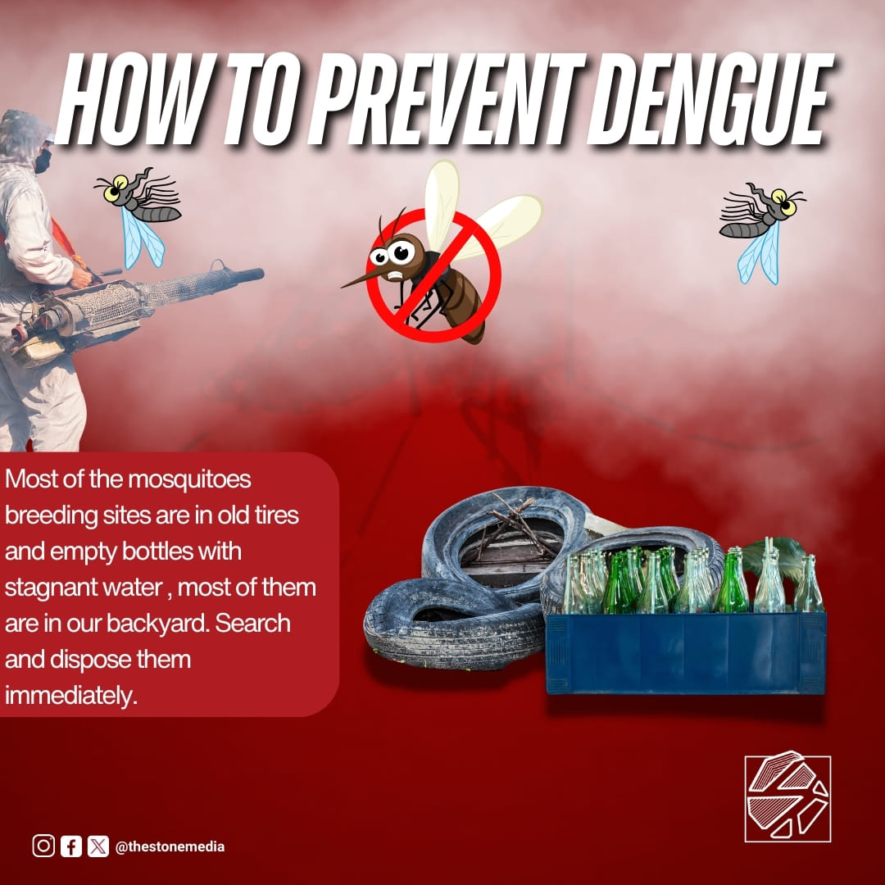
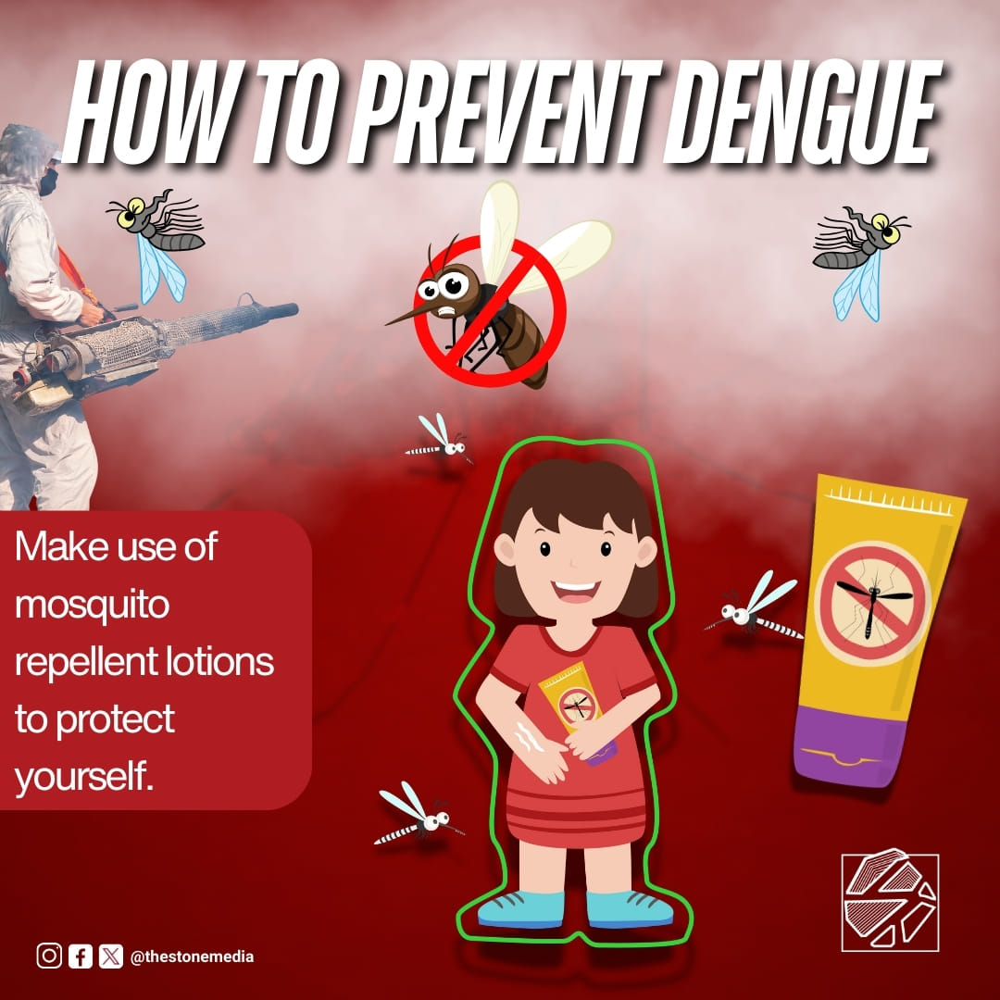
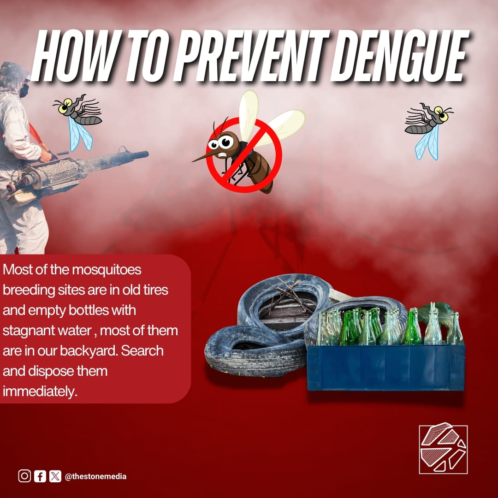
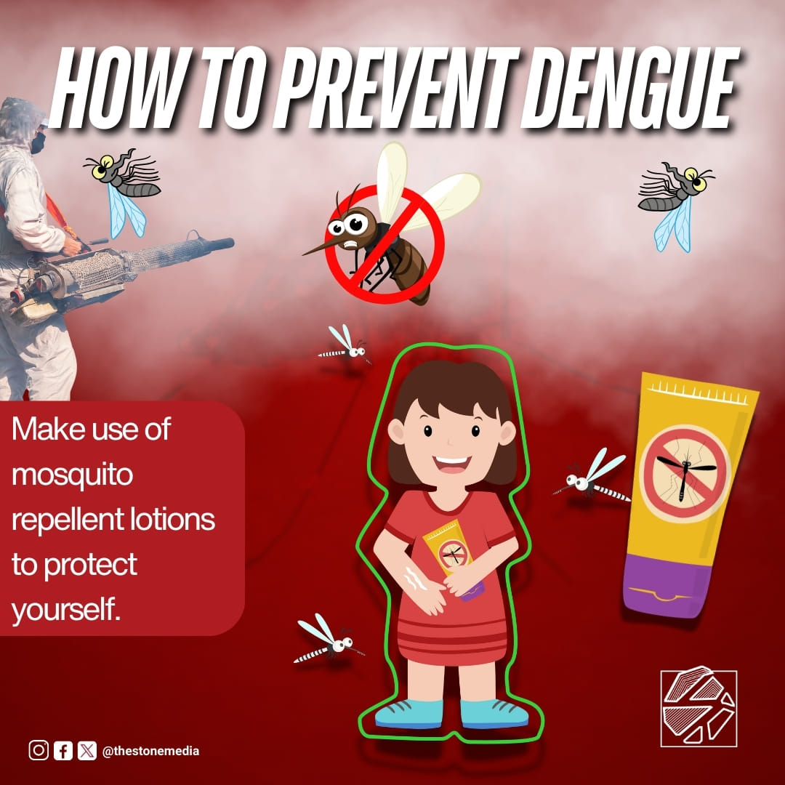
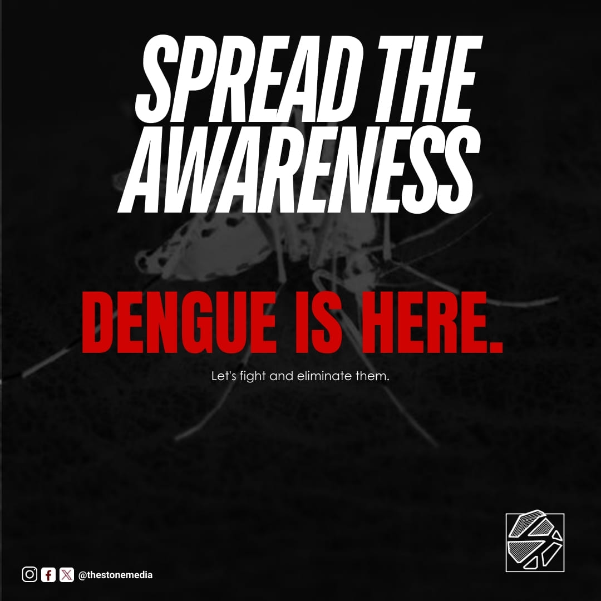
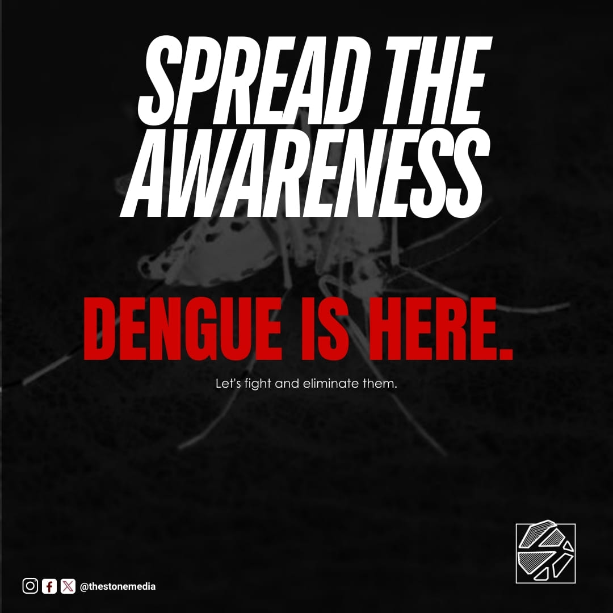
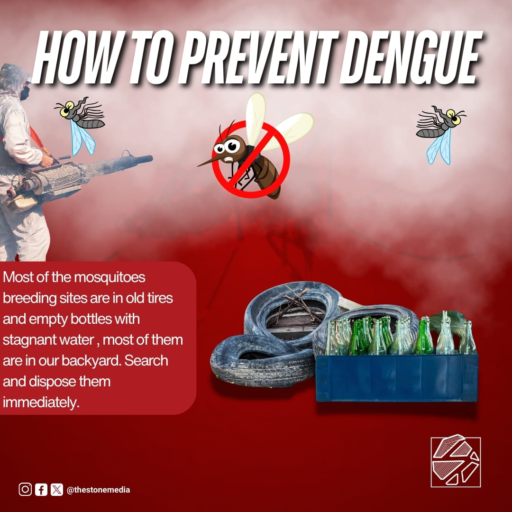
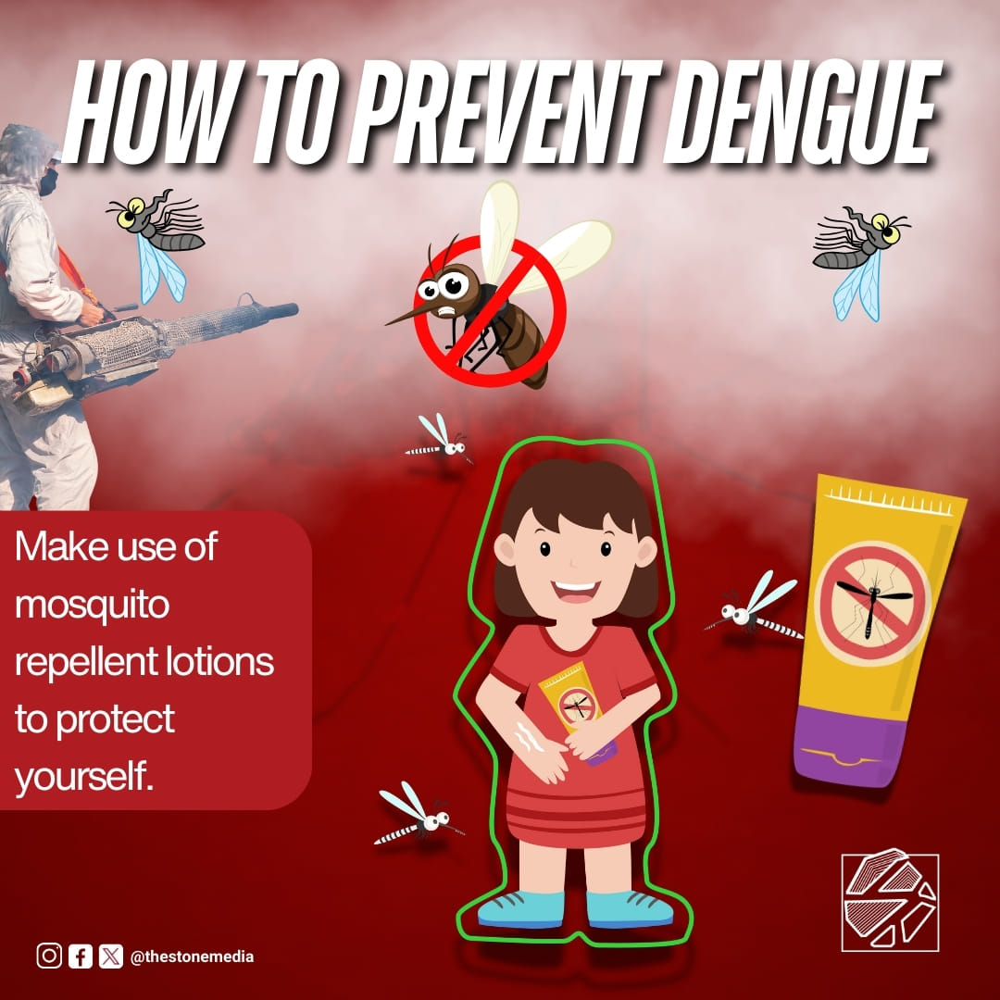
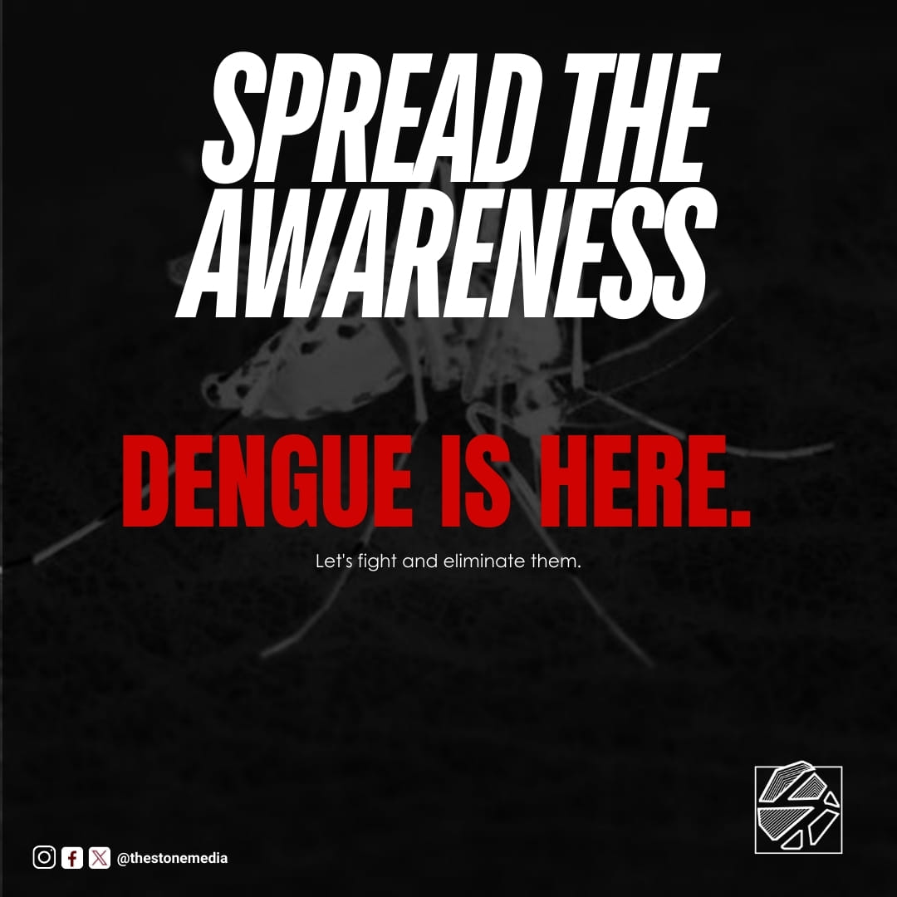

Dengue Fever?
 




 

With dengue cases rising and no specific cure available, prevention is key
Learn how to help protect yourself from mosquito bites and from dengue.
While mosquito bites account for only a small percentage of the total number of deaths in the world each day, they are nonetheless a significant concern in some African countries. Nigeria, the Democratic Republic of the Congo (DRC), the United Republic of Tanzania and Mozambique account for about 53% of all mosquito deaths around the world.
Of the 241 million malaria cases that occurred in the country in 2020, 627,000 of them ended in death. A World Health Organization Fact Sheet this disease originates from female Anopheles mosquitos infected by malaria. It is treatable and preventable, however.
Dengue, a mosquito-borne viral disease, continues to significantly impact tropical and subtropical regions worldwide. As of April 2024, over 7.6 million cases have been reported globally, with the Americas experiencing a marked increase. Children, often more vulnerable to severe symptoms, remain a key demographic in these statistics
In the Philippines, dengue remains a significant public health concern, with a notable increase in cases this year. As of September 2024, over 208,000 dengue cases were reported, marking a substantial rise compared to the previous year. This includes a 33% increase in cases from the first half of the year compared to 2023. However, the case fatality rate has slightly improved, with 396 deaths reported by mid-year, compared to 421 during the same period last year
In Calbayog City, Samar, dengue cases have significantly increased in 2024. From January to mid-August, the city recorded 422 cases, a dramatic rise compared to just 83 cases during the same period in 2023. Two dengue-related deaths have been reported this year. Out of the city’s 157 villages, 57 have been affected, including 20 within the city proper.
To combat this surge, Calbayog City was declared under a state of calamity, enabling the allocation of emergency response funds. Local authorities have intensified efforts such as clean-up drives to destroy mosquito breeding sites and implementing measures to protect children in schools. Residents are encouraged to follow dengue prevention strategies, including the 5S approach: search and destroy mosquito habitats, practice self-protection, seek early medical consultation, support fogging operations, and maintain hydration



Welcome to Stop Dengue Now, an awareness platform dedicated to fighting the spread of dengue fever. Our mission is to educate communities,
empower individuals, and inspire collective action to prevent and control this mosquito-borne disease. Through accurate information, practical
prevention tips, and updates on dengue cases, we aim to create a safer and healthier environment for everyone, especially vulnerable
groups like children. Together, let’s reduce mosquito habitats, advocate for early treatment, and promote community involvement in tackling
this global health challenge. Join us in making a difference—stop dengue now!